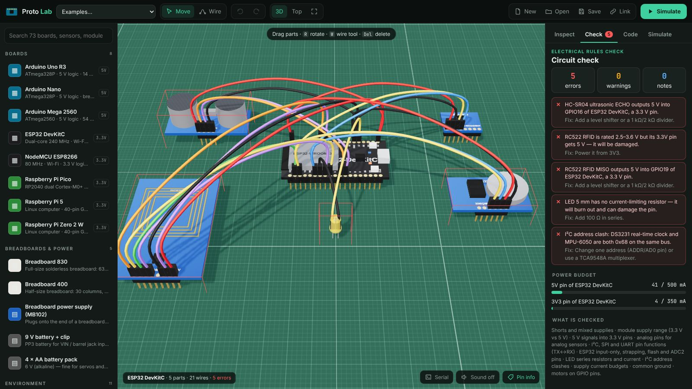
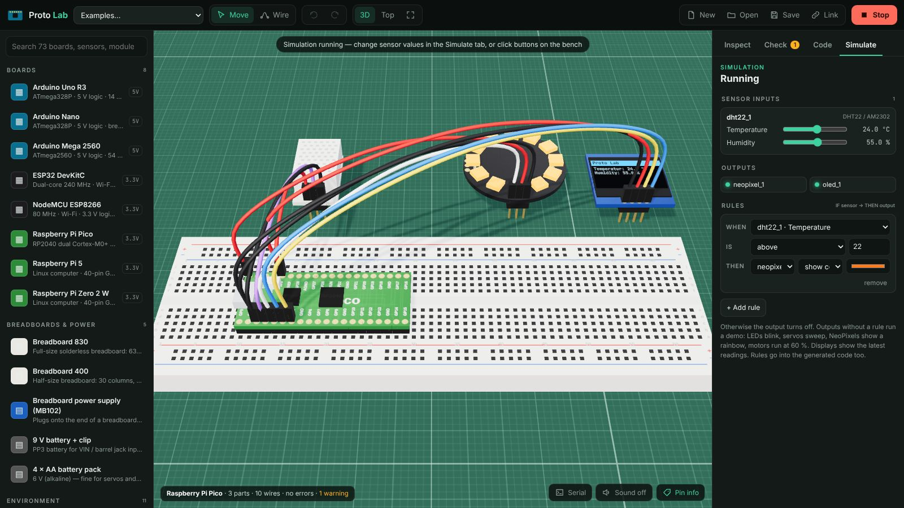
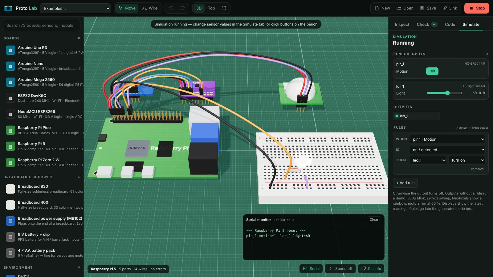
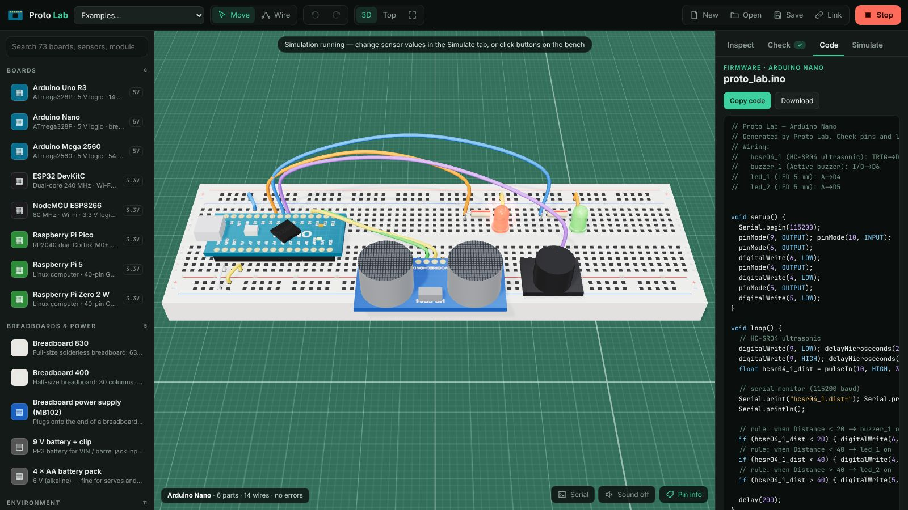

Proto Lab¶
A 3D electronics bench for prototyping with Arduino, ESP32 and Raspberry Pi boards. You can:
- place a board, a breadboard and sensors
- wire them pin to pin
- check the circuit for electrical mistakes
- simulate it with live sensor values
- copy the generated firmware
Open Proto Lab Source on GitHub

Boards¶
| Board | Logic | Highlights | Code |
|---|---|---|---|
| Arduino Uno R3 | 5 V | ATmega328P, 6 PWM, 6 analog, SDA/SCL header | Arduino C++ |
| Arduino Nano | 5 V | Breadboard-friendly, 8 analog | Arduino C++ |
| Arduino Mega 2560 | 5 V | 54 digital, 15 PWM, 16 analog, double header | Arduino C++ |
| ESP32 DevKitC | 3.3 V | Wi-Fi + Bluetooth, ADC1/ADC2, input-only and strapping pins | Arduino C++ · MicroPython |
| NodeMCU ESP8266 | 3.3 V | Wi-Fi, single A0 input, D-pin names | Arduino C++ · MicroPython |
| Raspberry Pi Pico | 3.3 V | RP2040, 3 ADC, two I²C and SPI controllers | MicroPython · Arduino C++ |
| Raspberry Pi 5 | 3.3 V | 40-pin header with BCM numbering, no ADC | Python (gpiozero, Blinka) |
| Raspberry Pi Zero 2 W | 3.3 V | 40-pin header, no ADC | Python (gpiozero, Blinka) |
Every header pin is modelled with its role (GPIO, 5 V, 3.3 V, GND, VIN) and its functions: PWM, ADC, I²C, SPI, UART, interrupts, DAC, ESP32 input-only, strapping and flash pins. Hover a pin to see them. The pins it connects to light up.
Parts library (65)¶
- Environment: DHT11, DHT22, BME280, BMP280, SHT31, DS18B20, capacitive soil moisture, rain, MQ-2, MQ-135, water level.
- Light & colour: LDR, BH1750, TCS34725, GUVA-S12SD UV.
- Motion & position: HC-SR501 PIR, MPU-6050, ADXL345, Hall effect, tilt switch, rotary encoder, IR obstacle, line tracker.
- Distance: HC-SR04, VL53L0X time-of-flight, Sharp IR.
- Sound, touch & more: sound sensor, flame, TTP223 touch, MAX30102 pulse oximeter, HX711 load cell, INA219, ACS712.
- Inputs: push button, potentiometer, joystick, RC522 RFID, IR receiver, NEO-6M GPS.
- Outputs:
- LED in six colours, RGB LED, active buzzer and passive piezo
- SSD1306 OLED, 1602 I²C LCD, TM1637 7-segment display
- MAX7219 8×8 matrix, 12-pixel NeoPixel ring
- Motors & actuators: SG90 servo, relay module, DC motor + L298N, 28BYJ-48 stepper + ULN2003, bare DC motor.
- Communication & storage: HC-05 Bluetooth, nRF24L01+, microSD, DS3231 RTC, ADS1115 ADC, 4-channel level shifter.
- Breadboards & power: 830- and 400-point breadboards, MB102 breadboard supply, 9 V battery, 4 × AA pack.
- Passives: resistors from 100 Ω to 100 kΩ, with colour bands.
Each part has a datasheet-style electrical profile:
- supply range and typical current
- I²C address
- output level, and the minimum HIGH level its inputs need
- 5 V tolerance of its inputs
Building a circuit¶
- Place: click a part in the library. Drag parts on the cutting mat, and press R to rotate.
- Breadboards: drop a part with header pins (a module, LED, resistor, button or
breadboard-style board) onto a breadboard. It snaps into the holes and plugs in.
- The a–e and f–j column strips and the four power rails connect it.
- Wire: press W, click a pin or hole, then click another. Wires are coloured by convention: red for power, black for ground, and colours for signals.
- Auto-wire: select a module and press ⚡ Auto-wire. Proto Lab picks the supply (3.3 V or 5 V, from the module's range and the board's logic level), GND, I²C/SPI pins, an analog pin for analog outputs, a PWM pin where one is needed, and free GPIO for the rest.
- Inspect: the pin table shows every pin, its function, the hole it is plugged into and what it connects to.
Circuit check¶

The Check tab builds a netlist from wires, breadboard strips and board-internal connections (all GND pins, Uno A4/SDA and A5/SCL). It then reports:
| Check | Example |
|---|---|
| Shorts and mixed supplies | 5 V wired to GND; 5 V and 3.3 V joined |
| Supply range | RC522 (3.3 V only) on 5 V; MQ-2 heater on 3.3 V |
| Logic levels | HC-SR04 ECHO (5 V) into an ESP32 or Raspberry Pi GPIO |
| Pin functions | analog sensor on a digital pin; I²C on non-I²C pins; TX→TX; Pi UART not on GPIO14/15; Pico SDA/SCL on different controllers |
| Board quirks | ESP32 input-only (34–39), strapping, flash and ADC2 pins; Arduino D0/D1 shared with USB; Pi HAT EEPROM pins |
| LEDs | missing series resistor, reversed LED, current from V, Vf and R |
| I²C | address clashes (MPU-6050 and DS3231 both at 0x68) |
| Power budget | current drawn from each 5 V / 3.3 V pin, MB102 or battery against its limit |
| Grounds | modules on an external supply without a common GND |
| Motors | DC motor straight on a GPIO pin; servos on the board's 5 V |
Load Fault-finding challenge from the Examples menu for a circuit with five planted mistakes.
Simulation¶
Press Simulate (or Space).
- Sensors: each working sensor gets sliders or toggles in the Simulate tab. You can also click buttons, PIRs and touch pads on the bench.
- Rules: rules such as when distance is below 20 cm → buzzer sounds drive the outputs. Outputs without a rule run a demo: LEDs blink, servos sweep, NeoPixels show a rainbow and motors spin.
- What you see:
- LEDs glow in their colour
- servo horns turn, DC motor wheels and stepper shafts spin
- the relay LED lights
- OLED, LCD, 7-segment and LED-matrix displays show the latest readings
- Serial monitor: prints the same line the generated firmware prints.
Only parts that pass the check and are wired to the main board take part, so a mis-wired sensor stays silent, as it would on a real bench.

Pico NeoPixel thermometer¶
A Raspberry Pi Pico plugged into a breadboard, with a DHT22 driving the ring colour.

Raspberry Pi motion light¶
PIR on GPIO4, an LED with a 220 Ω resistor, and an LDR read through an ADS1115.
Generated code¶

The Code tab writes a complete starter program for the main board:
- Arduino C++: for Uno, Nano, Mega, ESP32, ESP8266 and Pico (arduino-pico). Lists the Library Manager packages, for example Adafruit BME280, DHT, NeoPixel, SSD1306, LiquidCrystal I2C, ESP32Servo, TinyGPSPlus and RF24.
- MicroPython: for Pico, ESP32 and ESP8266, using the built-in
dht,onewire,neopixelandPWMmodules plus common driver files. - Python: for the Raspberry Pi, using
gpiozerofor GPIO devices and Adafruit CircuitPython (Blinka) for I²C sensors and the ADS1115.
Each program follows the same structure:
- Set up the I²C, SPI and UART buses on the pins you wired.
- Read every sensor into a named variable, for example
bme280_1_temp. - Print the readings to serial.
- Apply your rules.
- Refresh the displays.
- Send CSV over Bluetooth, nRF24 or to the SD card when those parts are present.
A wiring comment at the top lists every connection.
Files¶
projects/proto-lab/
├── index.html · styles.css
└── src/
├── catalog/boards.js # 8 boards: pin positions, roles, capabilities
├── catalog/parts.js # 65 parts: pins, electrical profile, 3D features, sim values
├── breadboard.js # hole layout, strips and rails
├── circuit.js # plugging, nets (union-find), electrical rules, auto-wire
├── codegen.js # Arduino / MicroPython / Python drivers and program assembly
├── sim.js # behavioural simulation
├── models.js # procedural 3D boards, modules, breadboards, displays
├── examples.js # example projects
└── main.js # scene, interaction, panels
A teaching tool, not SPICE
Pinouts follow the manufacturers' published diagrams. The electrical checks use each part's rated ranges, and the simulation is behavioural. Generated code is a starting point: check libraries, pins and datasheets before you power real hardware.